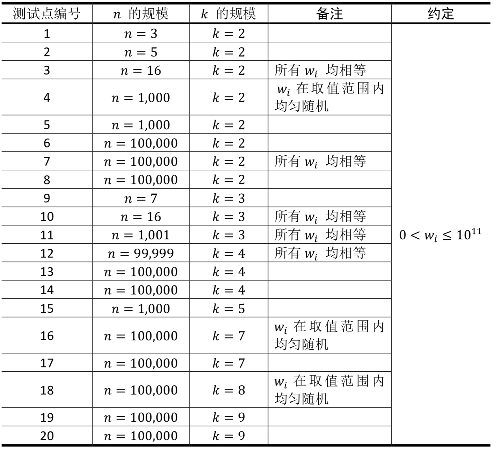

【样例说明1】
用$𝑋(𝑘)$表示$𝑋$是以$𝑘$进制表示的字符串。
一种最优方案：令$00_{(2)}$替换第1种单词，$01_{(2)}$替换第2种单词，$10_{(2)}$替换第3种单词，$11_{(2)}$替换第4种单词。在这种方案下，编码以后的最短长度为：1 × 2 + 1 × 2 + 2 × 2 + 2 × 2 = 12
最长字符串$𝑠_𝑖$的长度为2。
一种非最优方案：令$000_{(2)}$替换第1种单词，$001_{(2)}$替换第2种单词，$01_{(2)}$替换第3种单词，$1_{(2)}$替换第4种单词。在这种方案下，编码以后的最短长度为：1×3+1×3+2×2+2×1 = 12
最长字符串$𝑠_𝑖$的长度为3。与最优方案相比，文章的长度相同，但是最长字符串的长度更长一些。
【样例说明2】
一种最优方案：令$000_{(3)}$替换第1种单词，$001_{(3)}$替换第2种单词，$01{(3)}$替换第3种单词，$02_{(3)}$替换第4种单词，$1_{(3)}$替换第5种单词，$2_{(3)}$替换第6种单词。
【数据规模与约定】
所有测试数据的范围和特点如下表所示

【提示】
选手请注意使用64位整数进行输入输出、存储和计算。
【评分方式】（comet 暂不支持部分分）
对于每个测试点：
若输出文件的第1行正确，得到该测试点40%的分数；
若输出文件完全正确，得到该测试点100%的分数。
 Comet OJ
Comet OJ